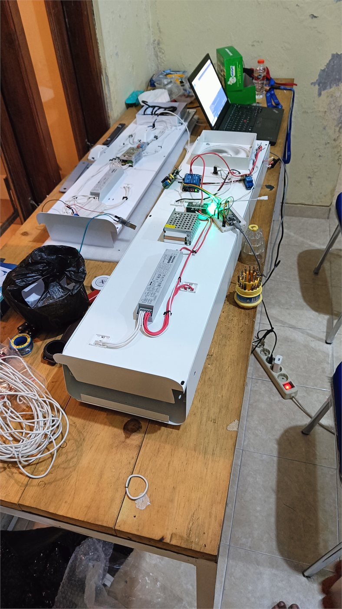
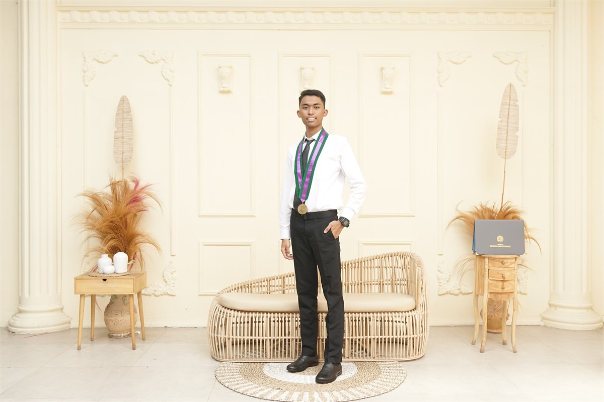
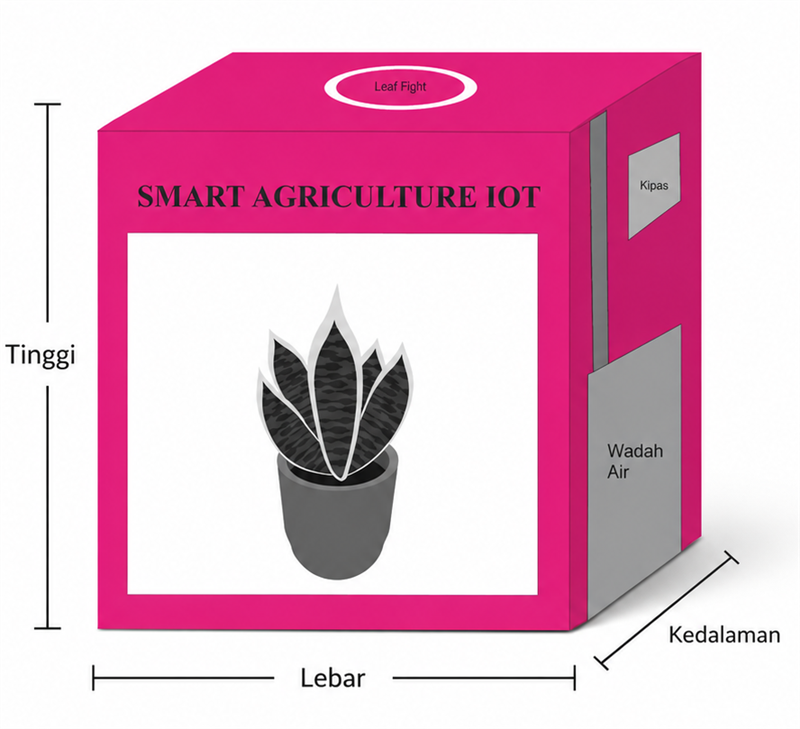
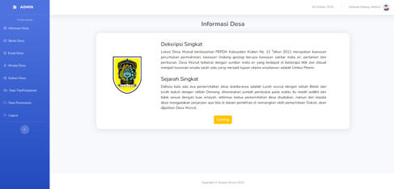
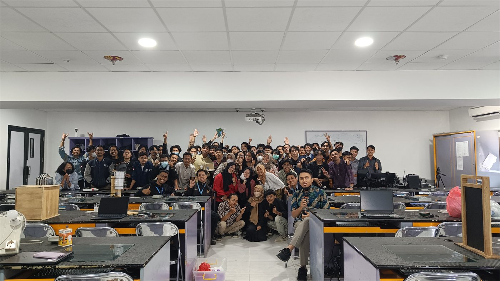
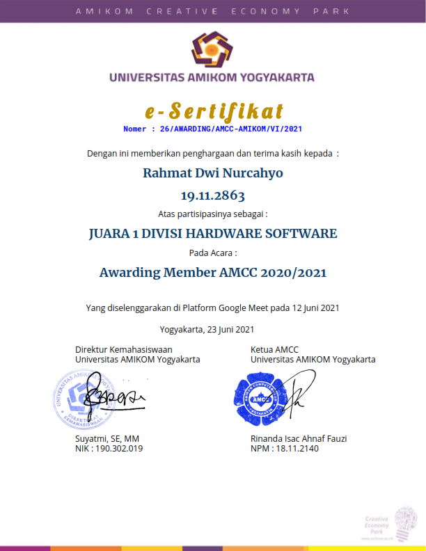
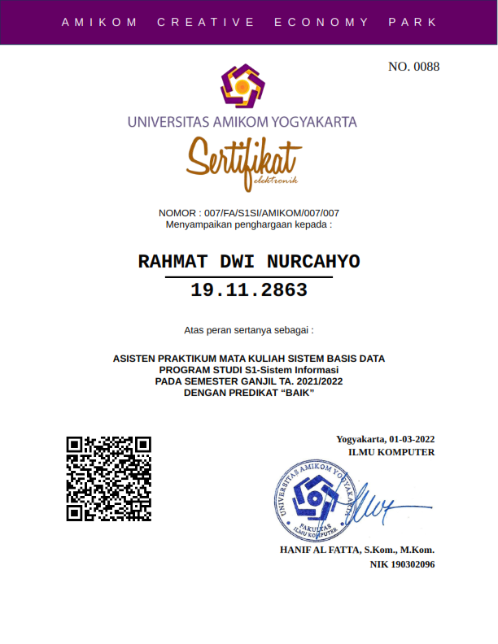
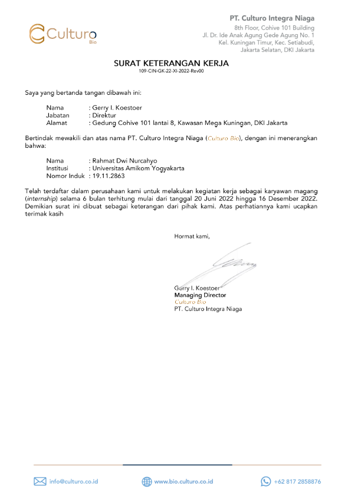

IoTAirdisenflex — IoT Sanitizer Device
Perangkat sanitasi udara dan permukaan otomatis terintegrasi mikrokontroler dan sensor pintar untuk pencegahan kontaminasi udara pada lingkungan klinis dan publik.

Halo, saya
AI Enthusiast yang aktif mengeksplorasi kecerdasan buatan untuk kebutuhan konten kreator dan proyek website. Lulusan S1 Informatika Universitas Amikom Yogyakarta (IPK 3,89/4,00) berfokus pada IoT, Database Systems, dan Web Development.
Saya Rahmat Dwi Nurcahyo, seorang AI Enthusiast yang aktif mengeksplorasi kecerdasan buatan untuk kebutuhan Content Creator dan pengembangan website. Lulusan S1 Informatika Universitas Amikom Yogyakarta dengan IPK 3,89/4,00, dengan fokus teknis kuat pada Internet of Things (IoT) dan Database Systems. Berpengalaman sebagai Asisten Laboratorium Database & Mikrokontroler selama 4 tahun, mengembangkan produk IoT Airdisenflex di PT. Culturo Bio, serta membangun website desa berbasis Laravel.
Universitas Amikom Yogyakarta
Membimbing praktikum basis data (SQL Server, MySQL) dan pemrograman mikrokontroler/IoT (Arduino, sensor, aktuator). Menyusun materi ajar, modul praktikum, dan evaluasi hasil belajar ratusan mahasiswa.
PT. Culturo Bio
Mengembangkan produk IoT Airdisenflex: perancangan arsitektur hardware & firmware, pengujian sensor sterilisasi udara, perakitan prototipe presisi, dan uji kelayakan produksi siap edar.
Shopee Indonesia
Menangani penanganan pertanyaan dan keluhan pembeli secara realtime melalui live chat, memproses eskalasi logistik/paket tertunda, serta berkoordinasi langsung dengan pihak ekspedisi untuk penyelesaian cepat.
Mengelola channel YouTube secara menyeluruh dengan memanfaatkan tools AI untuk riset tren gadget/teknologi, penulisan naskah (storyboarding), produksi & editing video (Premiere Pro, CapCut), desain grafis, dan analitik performa audiens.
Geser untuk melihat proyek & klik kartu gambar untuk melihat ukuran penuh

IoTPerangkat sanitasi udara dan permukaan otomatis terintegrasi mikrokontroler dan sensor pintar untuk pencegahan kontaminasi udara pada lingkungan klinis dan publik.

IoTSistem monitoring dan otomatisasi penyiraman pertanian presisi berbasis sensor kelembaban tanah, suhu, dan aktuator relay dengan pelaporan data jarak jauh.

WebPortal informasi desa dan layanan administrasi digital masyarakat berbasis web dengan CMS dinamis, responsif di semua perangkat dan ramah pengguna.

Database & HardwareDokumentasi dan sistem modul pembelajaran praktikum untuk ratusan mahasiswa dalam penguasaan skema basis data relasional serta interfacing mikrokontroler.
Aktivitas dan eksplorasi di luar rutinitas yang menjaga energi kreatif, stamina, dan rasa ingin tahu tetap menyala
Klik kartu untuk memperbesar dokumen sertifikat

Amikom Computer Club

Microsoft SQL Server & Desain Relasional
Sistem Komputer & Perangkat Keras
Sistem Tertanam & Antarmuka Sensor

Asisten Laboratorium Universitas Amikom Yogyakarta
Terbuka untuk peluang kerja sama, diskusi teknis IoT & Database, ataupun proyek kreatif.
github.com/rahmat48
rahmatdw48@gmail.com
+62 812-1427-7964
@rahmatdw48
Klaten, Jawa Tengah, ID
@BS_REVIEW48